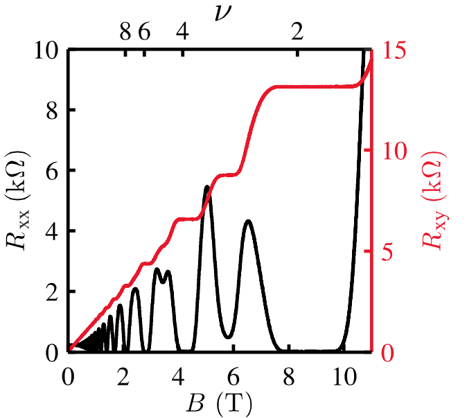
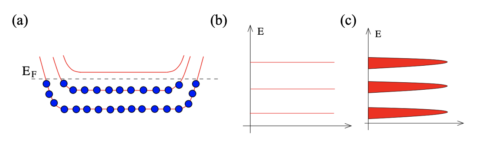
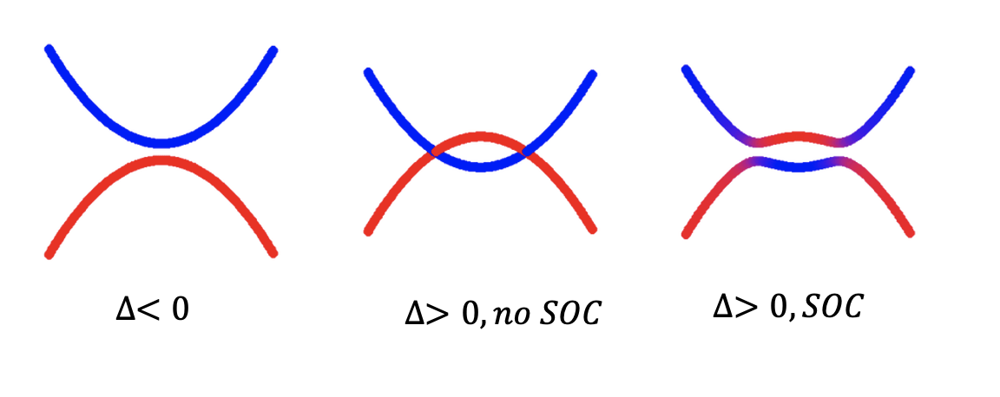
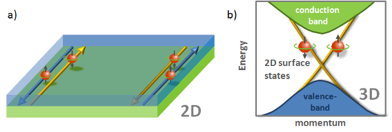
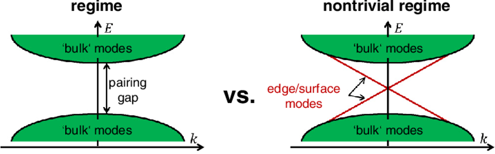
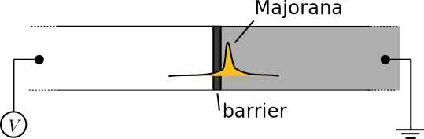
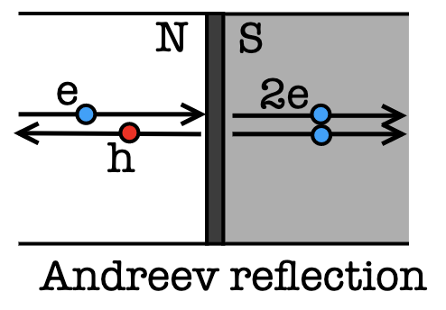
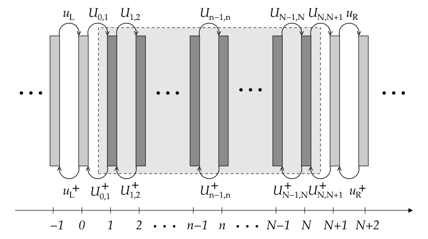

朗道的费米液体理论和对称性破缺的相变理论一直是凝聚态物理的两大支柱，描述了几乎所有传统量子物态及其相变.但量子霍尔效应的发现挑战了这一秩序，揭开了了拓扑物态研究的序幕.1980年，Von Klitzing等人[1]发现在垂直磁场下，二维电子气的霍尔电导是严格量子化的，不受材料中无序、杂质等因素的影响.
Thouless[2]在1982年将霍尔电导与能带的拓扑成功联系了起来.利用线性响应理论，二维电子气的霍尔电导可以由久保公式得到： $$ \sigma_{x y}=-\frac{e^{2}}{h} \sum_{n} \int \frac{d^{2} \boldsymbol{k}}{2 \pi i} F_{n}(\boldsymbol{k}) $$ 其中积分对整个布里渊区进行，n标记了被占据的能级.通过对比此公式与量子力学中的贝里相位，发现$F_{n}(\boldsymbol{k})$正是贝里曲率.数学上，由久保公式给出的霍尔电导正比于一个拓扑不变量，称为陈数(Chern number).因为这个数是拓扑不变的，所以霍尔电导平台也就不受弱微扰和无序杂质的影响.
从体态角度去理解，Robert Laughlin提出强磁场下二维电子气量子化的轨道导致了量子化的朗道能级，由于杂质、无序的存在使得这些能级有展宽，从而产生了电导随磁场变化的一个个平台. 另一方面，哈佛大学的Bertrand Halperin等人指出理想的朗道能级是局域态， 不能导电. 但实际样品有边界，边界上的朗道能级产生色散从而传导电子（如下图（a））. 因此在弹道输运（Ballistic Condunctance）的范围内，电导应该正比于 边界态的数量，因此是量子化的. 这就是后来Hatsugai等人提出的体-边对应（Bulk-edge Correspondance）.
霍尔效应的一个重要应用是精密测量，其量子化电导测量精度可以达到十亿分之一，这为精确定标某些科学常数提供了便利. 2018年，国际计量大会正式决定用量子霍尔 电导来确定普朗克常数和单位电荷值: $$R_{K}=\frac{h}{e^{2}}=25812.80745...\Omega$$
1988年Haldane[3]提出一个不需要外加磁场就能实现非零霍尔电导的模型（但时间反演对称性仍需被打破）.后来，Kane和Mele[4,5]又提出在石墨烯中，自旋轨道耦合可以导致时间反演不变的量子自旋霍尔效应(QSH).这种全新的拓扑物态可以被看作是具有两个传播方向相反的边界态，由$\mathbb{Z}_{2}$拓扑数分类.但实际上石墨烯中的自旋轨道耦合太弱，不足以导致QSH.张首晟[6]等人在2006年提出了一个实际模型，即HgTe/CdTe量子阱可以实现QSH.如果自旋轨道耦合较强，导带和价带位置会重叠形成反带，使得波函数高对称点的宇称变号，从而根据付亮和Kane的理论便会发生拓扑相变. 具体而言，如果体系中有价带和导带的交叠， 自旋轨道耦合便会再交点打开能隙. 此时体系的色散就不能绝热演化到单原子极限而不关闭能隙，也就是拓扑非平庸. 此后，拓扑绝缘体又被推广到三，物理所的方忠老师与合作者更是利用第一性原理计算预言了$Bi_{2}Se_{3}$是一个三维拓扑绝缘体，并被Zahid Hassan等人实验上证实.
下面我们就来详细分析求解张首晟等人提出的BHZ model.对于HgTe/CdTe体系，电子在$\Gamma$点附近的低能有效哈密顿量可以由kp微扰理论得到，由一个$4\times 4$的矩阵描述 $$ H(\boldsymbol{k})=\left[\begin{array}{cc} h(\boldsymbol{k}) & 0 \\ 0 & h^{*}(-\boldsymbol{k}) \end{array}\right]$$
这里右下角的对角矩阵$h^{*}(-\boldsymbol{k})$是左上角$h(\boldsymbol{k})$的时间反演.由于只考虑低能电子，我们只需要保留哈密顿量中的最低阶几项.如果定义 $$ \begin{aligned} &d_{x}(\boldsymbol{k})=A k_{x}, \quad d_{y}(\boldsymbol{k})=A k_{y} \\ &d_{z}(\boldsymbol{k})=\Delta-B\left(k_{x}^{2}+k_{y}^{2}\right) \end{aligned} $$ 那么哈密顿量可以简洁地写作$ h(\boldsymbol{k})=\boldsymbol{d}(\boldsymbol{k}) \cdot \boldsymbol{\sigma} $（$\boldsymbol{\sigma}=\left(\sigma_{x}, \sigma_{y}, \sigma_{z}\right)$是泡利矩阵).其中参数$A,B,\Delta$是材料参数，也依赖于量子阱的宽度， 并且可以从第一性原理计算拟合得到. 具体而言，A是相邻格点之间s轨道和s轨道的跃迁，B是相邻格点之间s轨道和p轨道的跃迁，$\Delta$是能隙大小.
具有时间反演对称保护的边缘态是拓扑绝缘体的一个至关重要的特性，其边缘态可以通过求解BHZ模型哈密顿量在开放边界条件下得到.我们对一个x方向无限长，y方向宽度为N的纳米带哈密顿量严格对角化，通过调节参数A和B(这里设$\Delta=1$)我们发现边界态是否存在与参数有关，即是否拓扑依赖于参数.所以在某些特定参数体系会发生拓扑相变，但并不破坏对称性，这是超出朗道经典的对称破缺理论的.
A:
B:
N:
如图所示，拓扑绝缘体的边界态可以理解为两份量子霍尔边界态[10].
狄拉克方程预言了反粒子的存在.而Majorana准粒子是一种特殊的费米子，它的反粒子就是它本身，其交换满足non-Abelian统计的特性使得它能在拓扑量子容错计算方面具有重要的应用前景.某种材料的激发态在量子化后往往可以近似看做独立运动的“准粒子”.这一概念发源于俄国物理学家Landau对液氦的研究，如今已经是凝聚态理论的基本概念.这些准粒子作为宏观体系的集体激发态，常常表现出和微观粒子截然不同的行为.而拓扑非平庸超导体是实现Majorana准粒子的重要载体.因此，探索与研究拓扑非平庸超导体则成为近些年凝聚态物理学研究的前沿热点. 从理论上讲,要实现普适的拓扑非平庸超导体需要三个至关重要的因素：
根据这三点条件，美国MIT傅亮教授提出在常规s波超导体与拓扑绝缘体的异质界面处实现手征性p波拓扑非平庸超导体[7]，而清华大学薛其坤教授和上海交通大学贾金峰教授的团队在实验上也已经观测到 $NbSe_{2}/Bi_{2}Se_{3}$异质界面系统中存在着拓扑序和超导序的共存[8].
超导由BdG(Bogoliubov-de Gennes)哈密顿量述描述 $$ \widehat{H}=\frac{1}{2} \sum_{k}\left(c_{k}^{\dagger} c_{-k}\right) H_{B d G}\left(\begin{array}{c} c_{k} \\ c_{-k}^{\dagger} \end{array}\right) \quad H_{\mathrm{BdG}}=\left(\begin{array}{cc} h_{0} & \Delta \\ \Delta^{\dagger} & -h_{0}^{T} \end{array}\right) $$ 这里$h_{0}$是自由电子的哈密顿量，$h_{0}=-t[cos(k_{x})+cos(k_{y})]-\mu$，$\Delta$是超导的gap function，如果将它用球谐函数展开，$l=0,1,2...$分别称作s,p,d波.上述手征p波，说的就是$\Delta=\Delta_{0}(k_{x}+ik_{y})$.以下的计算我们假设$t=1$
$\mu$:
$\Delta_{0}$:
N:
通过调节参数，可以发现$|\mu|< 2t$ 时体系是拓扑非平庸的，始终有边界态存在. 并且由于超导中内禀的粒子-空穴对称性，零能处的准粒子满足$\gamma_{0}^{\dagger}=\gamma_{0}$，即粒子等于自身的反粒子，满足Majorana条件.
目前实验上实现拓扑超导除了本征的p波超导外，还可以利用近邻效应，即将拓扑绝缘体与普通的s波超导体靠在一起，在界面上诱导出等效的p波超导.
考虑1D的简单情形，在拓扑平庸的参数区间，体系可以看做每个格点上的两个Majorana准粒子配对形成平庸的费米子，因而体系不显示拓扑性；而在$|\mu|< 2t$时，相邻格点的Majorana准粒子配对，因而在边界上（两端）有两个未配对的零能模.
为了探测端点的Majorana零能模，考虑一个金属和拓扑超导组成的NS结，中间由接触势垒隔开.当电子金属射入超导内，除了正常的透射，在界面上还会发生超导特有的Andreev反射.因为超导中电子只能以库珀对的形式存在，因此当一个电子射入超导，必定伴随着一个空穴的反射，这将带来额外的透射率.因此当界面上有零能模存在，对透射率，特别是Andreev反射一定会有影响.接下来我们就从理论上计算这样一个NS结的透射率，揭示Majorana零能模在输运上的“指纹性”特征
这里采用的方法叫做非平衡格林函数(NEGF)，这是一种广泛应用于纳米体系输运性质计算的理论方法.体系的格林函数定义为 $$ \mathbf{G}(E)=\left[E \mathbf{I}-\mathbf{H}_{2 \mathbf{D}}-\boldsymbol{\Sigma}_{\text {Lead }}\right]^{-1} $$ 其中$\boldsymbol{\Sigma}_{\text {Lead }}$是两侧电极的自能函数，满足$\Sigma_{L}^{r}(E)=u_{L} g_{L}^{r}(E) u_{L}^{\dagger}$和$\Sigma_{R}^{r}(E)=u_{R}^{\dagger} g_{R}^{r}(E) u_{R}$，这里$g_{L}^{r}$和$g_{R}^{r}$称为表面格林函数，他们满足一个自洽方程 $$ \begin{aligned} &{\left[E+i 0^{+}-h_{L}-\Sigma_{L}^{r}(E)\right] g_{L}^{r}(E)=I} \\ &{\left[E+i 0^{+}-h_{R}-\Sigma_{R}^{r}(E)\right] g_{R}^{r}(E)=I} \end{aligned} $$ 所以可以通过对这个方程组的迭代求解，算出左右两个电极的自能函数和体系的格林函数. 电导就等于$ \operatorname{Tr}\left[\Gamma_{L} G^{r} \Gamma_{R} G^{a}\right] $，这里$\Gamma_{L}$和$\Gamma_{R}$称为展宽函数，就是左右电极自能函数的虚部.
实际计算时，我们通常利用Dyson方程对格林函数进行迭代求解$$ \begin{aligned} &G=G^{(0)}+G^{(0)} V G \\ &G=G^{(0)}+G V G^{(0)} \end{aligned} $$ 这里G^{(0)}是未经微扰的格林函数.我们把体系划分成无数层，每次计算附加一层对原格林函数的微扰，直至收敛（微扰产生的结果可忽略）
调节三个参数对应的滑块，即可得到此时透射率随偏压变化的函数.可以发现
Barrier:
$\Delta_{0}$:
$\mu$: